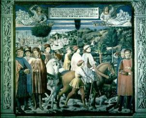
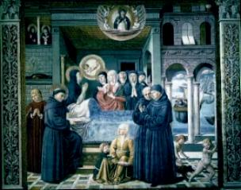
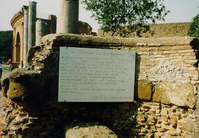
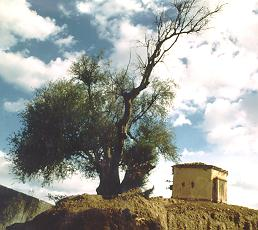
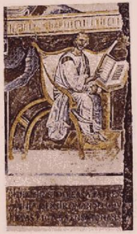

VIAGEM A ÓSTIA
– A partir daquele momento resolveu viver uma vida de recolhimento,
dedicada ao SENHOR, da mesma forma que decidiu
VIAGEM A ÓSTIA
– A partir daquele momento resolveu viver uma vida de recolhimento,
dedicada ao SENHOR, da mesma forma que decidiu
voltar a Tagaste e fundar um
Mosteiro. Com esta finalidade viajou para Óstia, em companhia de sua mãe, parentes
e discípulos, no sentido de conseguir uma embarcação com destino à África.
A viagem foi longa e muito cansativa. Mônica chegou
extenuada. Na manhã do dia seguinte, depois que recebeu a Sagrada Comunhão na
Santa Missa, entrou em êxtase e insensivelmente exclamou:
"Voemos ao Céu fiéis,
voemos ao Céuâ€.
Todos que se encontravam nas proximidades ficaram
espantados vendo o seu rosto lívido e seus olhos fixos num ponto do firmamento,
imaginando que ela fosse morrer. Interrogaram-na, chamando-a pelo nome, mas ela
nada respondeu.
Em Óstia alugaram uma pequena casa, onde foram
morar. O imóvel estava no subúrbio da cidade, bem longe da atividade comercial e
tinha um bonito e ensolarado jardim.

Certo dia, ele e sua mãe desfrutando do
conforto daquela tranquilidade, estavam debruçados no peitoril da janela que dava
para o jardim. Dali contemplavam a natureza e admiravam as maravilhas que a
bondade Divina fez. Dialogando em voz baixa, comentavam o esplendor e a beleza
que o CRIADOR nos proporciona, apesar de sermos criaturas repletas de imperfeições
e imaginavam, se aqui é assim, como deve ser de um encantamento indescritível aos
olhos dos Anjos e Santos, a visão do Paraíso de DEUS. E enquanto divagavam com
o pensamento, louvando o amor divino por toda humanidade, foram arrebatados
em êxtase até às Portas do Paraíso Celeste.
Quanto tempo ficaram lá ninguém sabe e eles
também não nos conta em suas obras. Agostinho apenas escreveu:
"Enquanto assim
falávamos, aspirando pela Sabedoria, atingimo-la momentaneamente num ímpeto
completo do coração. Suspiramos e deixamos lá 
agarradas as primícias do
nosso espírito".
Depois deste dia, Mônica não vivia mais na
Terra. De fato, cinco dias após aquela inesquecível visão, contraiu uma febre
maligna tão forte, que morreu no nono dia da enfermidade. Com 56 anos de idade
foi ao encontro do SENHOR na eternidade, no ano 387 de nossa era.
Seu corpo foi sepultado na cripta da Igreja
de Santa Áurea, em Óstia, e lá permaneceu até o ano 543, quando foi encontrado
e transladado para Roma, primeiro para a Igreja de São Trifão e mais tarde para
a Igreja que lhe foi dedicada.

MOSTEIRO EM TAGASTE
- Agostinho ainda permaneceu em Óstia aproximadamente um ano.
Depois seguiu para Tagaste, onde com seus companheiros, construiu um Mosteiro e puderam
dedicar-se ao trabalho de
evangelização com pleno ardor. Escreveu muito, explicando
de maneira incomparável uma quantidade apreciável de pontos doutrinários do
cristianismo, que até aquela época, eram motivos de controvérsias
e confusões.
Publicou diversos opúsculos combatendo a heresia
dos donatistas e dos maniqueus, pois se sentia angustiado diante do crescimento do
mal em Hipona, Cartago e Roma.
Por outro lado, seus amigos e conhecidos de
Tagaste, que sabiam de seu valor intelectual, de sua oratória inflamada e imponente, o
procurava constantemente para que os defendessem no Tribunal, ou que servisse de
mediador em alguma demanda, ou ainda, para que os ajudassem a tirar alguém da
prisão, inocentemente processado e encarcerado.

Depois de muita relutância, convencido de que
exercendo a profissão de advocacia era também uma maneira de fazer o bem, cedeu às
ponderações e aos insistentes apelos de seus amigos, e como todos esperavam, brilhou
intensamente no Fórum de Tagaste, com seus argumentos insuperáveis, repletos
de lógica e direito.
No ano 388 morreu Adeodato, seu filho, com
16 anos de idade, vítima de uma grave moléstia que em pouco tempo o matou. Agostinho
ficou profundamente triste e pesaroso, não só pela ausência dele, mas porque
também o rapaz vinha demonstrando um talento especial para a oratória, além de
professar com muita convicção a doutrina cristã.
A partir desta época sua vida ficou totalmente
absorvida pelo Mosteiro, por seus escritos e sua admirável atividade no
Tribunal de Tagaste.
Certo dia, um rico cidadão de Hipona, alto funcionário
do Império, escreveu-lhe e o convidou a visitá-lo, com o objetivo de esclarecer alguns aspectos
da religião católica e eliminar algumas dúvidas que possuía, as quais lhe impediam de ter
uma vida completamente cristã.
Agostinho foi e conseguiu completo êxito em
sua missão.
FOTOGRAFIAS:
1) Agostinho, sua mãe, familiares e discípulos, viajam para Óstia, na Itália;
2) Morte de Mônica; 3) Ruínas da Igreja de Santa Áurea, em Óstia; 4) Oliveira em
Tagaste, hoje Souk Ahrás na Algéria, onde existia o primeiro Mosteiro; 5) Imagem
de Santo Agostinho.
 Próxima Página
Próxima Página
Página Anterior
Retorna ao Índice